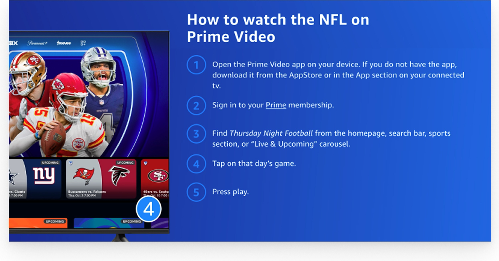
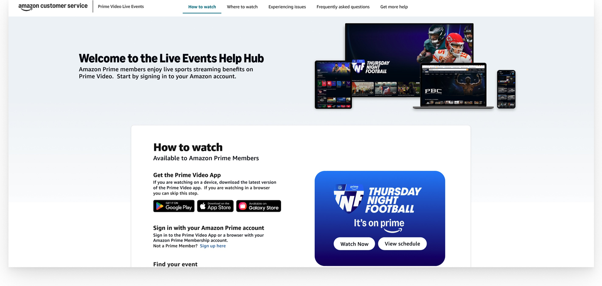
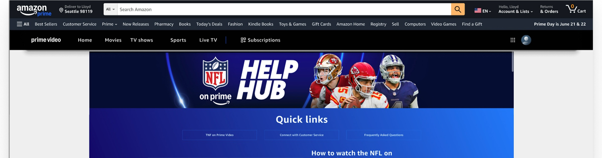
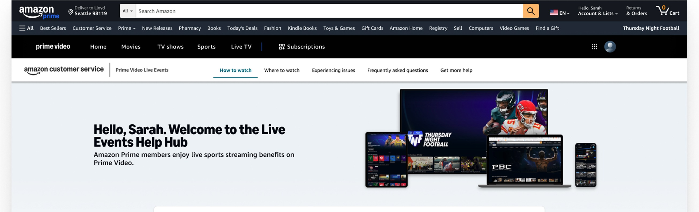
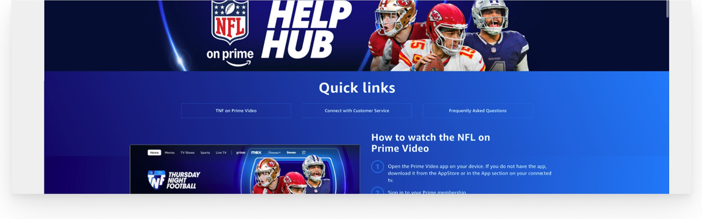
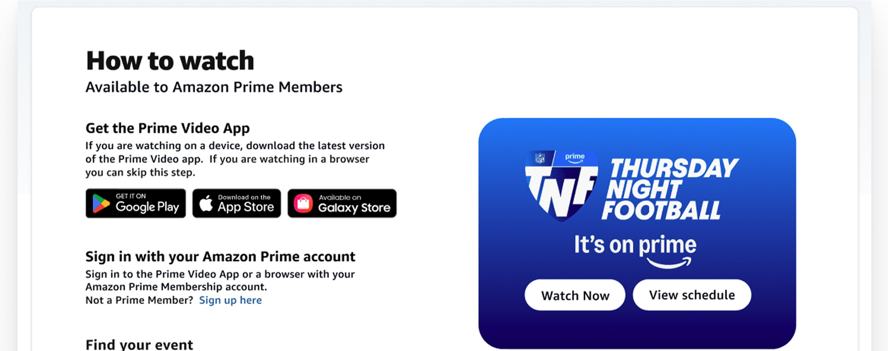
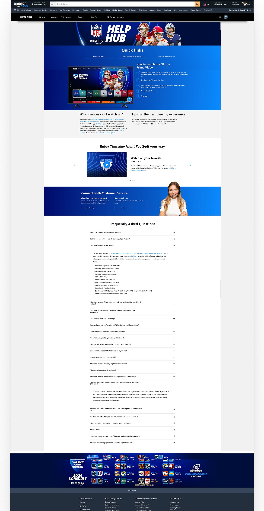
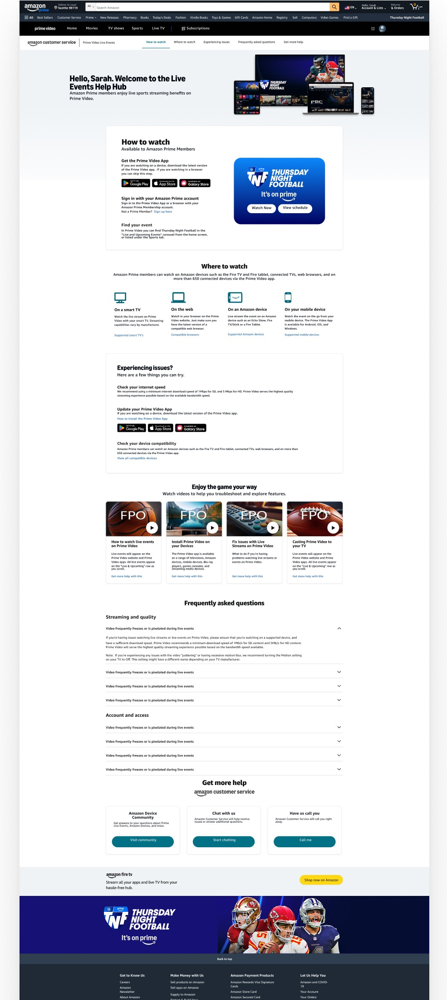

Case Study
Prime Video Live Events Help Hub
Redesigned a time-critical Help Hub experience for Prime Video Live Events to help customers start watching faster— improving information hierarchy, navigation, and “How to watch” guidance while preserving series branding (Thursday Night Football, NASCAR, and more).
Context
Live events create a uniquely urgent support moment: customers arrive minutes before kickoff and need immediate help with access, sign-in, device compatibility, and stream performance. During Thursday Night Football in particular, these moments drove high support contact volume.
My role
I led the UX redesign of the Live Events Help Hub page structure—evaluating the existing experience, redefining the information architecture, and designing a help-first layout that scales across branded series pages while introducing clearer Amazon Customer Service support cues.
- Owned: page IA, hierarchy, navigation model, module structure, and key microcopy patterns.
- Designed for: fast scanning and decision-making under time pressure.
- Balanced: series branding needs with support usability expectations.
Constraints
- Time pressure: customers need the shortest path to “start watching” and “fix what’s broken.”
- Brand requirements: pages must preserve series identity (TNF, NASCAR, etc.).
- Support cues: introduce consistent Amazon CS signals without feeling like marketing.
- Choice overload risk: too many competing links create hesitation and misclicks.
Problem
The existing page supported branded series experiences, but it wasn’t optimized for the live-event job-to-be-done: “Help me start watching (or fix what’s broken) right now.” Customers faced competing entry points, redundancy, and an information hierarchy that didn’t match urgency.
Approach
I redesigned the page around a help-first hierarchy and task-based information architecture. The solution focused on four moves: (1) faster orientation, (2) predictable navigation, (3) scannable “How to watch” steps, and (4) progressive disclosure to reduce redundancy and decision load.
Screens labeled Before (existing) reflect the live experience. Screens labeled After (my redesign) show my concept redesign work.
Key design moves
1) Help-first hierarchy
The original experience leaned heavily into a promotional hero, competing with the customer’s urgent goal. I reframed the top of the page to establish purpose immediately and route customers into “How to watch” as the primary path.


2) Clear, predictable navigation
Customers expect support pages to behave like support: clear sections, consistent labels, and fewer competing paths. The redesign standardizes navigation around task-based intent: How to watch / Where to watch / Issues / FAQs / Get help.


3) Scannable chunking for “How to watch”
“How to watch” is the critical path. I condensed the steps into a single scannable module: get the app (if needed), sign in / confirm access, find the event, and take action (Watch now / View schedule).


4) Reduce redundancy and choice overload
The original page repeated links across sections, creating “which one do I click?” moments. I shifted the structure toward progressive disclosure: surface common actions first, push edge cases deeper, and tighten CTAs so they read as support—not marketing.


Outcome
This concept redesign establishes a scalable pattern for branded Live Events help pages: help-first hierarchy, consistent task-based IA, scannable chunking for the critical path, and progressive disclosure for troubleshooting and FAQs—while keeping series identity intact and adding clearer support cues.
Note: Detailed performance outcomes can’t be shared due to confidentiality. “Before” screens are from the live page; “After” screens represent the redesign concept work.